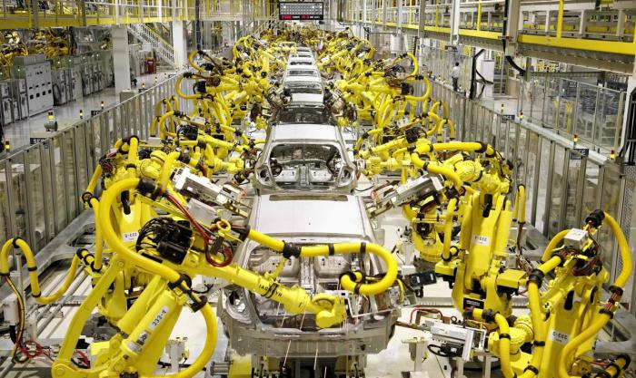

Применение роботов в промышленном производстве
Роботы на производстве массово распространились в конце XX века в связи со значительным ростом промышленного производства. Крупные серии продукции обусловили потребность в интенсивности и качестве такой работы, выполнение которой превышает объективные человеческие возможности.
Применение таких «умных» машин способствует эффективному решению трех важнейших проблем производства:
- повышения производительности труда
- улучшения условий труда людей
- оптимизации использования человеческих ресурсов.
Baxter — многофункциональный робот с двумя манипуляторами и системами обратной связи и самообучения.
Его 7-осевые манипуляторы способны почти на всё, на что способна рука человека, в том числе — имеют обратную связь и могут контролировать прилагаемые усилия. Это, плюс ещё особенности дизайна, делают Бакстера безопасным для живых рабочих — его рабочее место не нуждается в ограждении, да и вообще — места он занимает немного, что здорово экономит пространство в цеху.